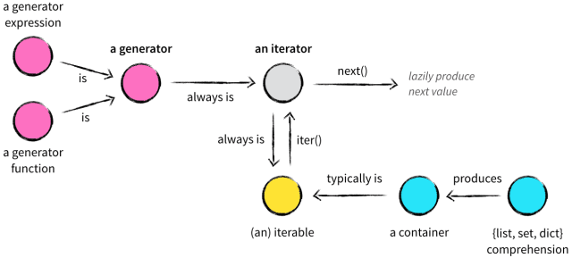
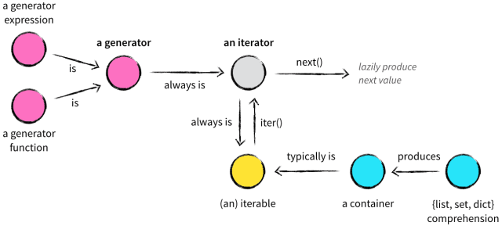

Python迭代器、迭代对象、生成器
这篇文章将用来介绍一下Python中容器(container)、可迭代对象(iterable)、迭代器(iterator)、生成器(generator)的概念以及他们的相互关系。

Love Life&Coding
这篇文章将用来介绍一下Python中容器(container)、可迭代对象(iterable)、迭代器(iterator)、生成器(generator)的概念以及他们的相互关系。

import requests
import json123456789101112131415161718192021222324252627282930313233343536373839404142434445464748495051525354555657585960616263646566676869707172737475767778798081828384858687888990919293949596979899100101102103104105106107108109110111112113114115116117118119120121122123124125126127128129130131132133134#发送POST请求 #r = requests.post("http://httpbin.org/post") #发送其他类型请求 #r = requests.put("http://httpbin.org/put") #r = requests.delete("http://httpbin.org/delete") #r = requests.head("http://httpbin.org/get") #r = requests.options("http://httpbin.org/get") #传递参数的GET请求 #payload = {'key1': 'value1', 'key2': 'value2'} #r = requests.get("http://httpbin.org/get", params=payload) #print(r.url) #查看相应内容，会自动解码 #print(r.text) #查看，指定URL编码 #print(r.encoding) #r.encoding = 'ISO-8859-1' #以字节方式访问相应,会自动解码gzip和deflate压缩的数据 #print(r.content) #创建图片 #from PIL import Image #from io import StringIO #i= Image.open(StringIO.StringIO(r.content)) #处理JSON数据 #import requests #r=requests.get('https://github.com/timeline.json') #print(r.json()) #返回原始相应内容 ##>>> r = requests.get('https://github.com/timeline.json', stream=True) ##>>> r.raw ##<requests.packages.urllib3.response.HTTPResponse object at 0x101194810> ##>>> r.raw.read(10) ##'\x1f\x8b\x08\x00\x00\x00\x00\x00\x00\x03' #保存文本,针对返回原始内容byte ##with open(filename, 'wb') as fd: ## for chunk in r.iter_content(chunk_size): ## fd.write(chunk) #添加头部 ##>>> import json ##>>> url = 'https://api.github.com/some/endpoint' ##>>> payload = {'some': 'data'} ##>>> headers = {'content-type': 'application/json'} ## ##>>> r = requests.post(url, data=json.dumps(payload), headers=headers) #账号密码登陆 #r = requests.get('https://api.github.com/user', auth=('user', 'pass')) #发送表单数据 ##paylaod={"key1":"value1","key2":"value2"} ##r=requests.post("http://httpbin.org/post",data=paylaod) ##print(r.text) #发送string数据 ##import json ##payload={"key1":"value1","key2":"value2"} ##r=requests.post("http://httpbin.org/post",data=json.dumps(payload)) ##print(r.text) #发送文件 ##url='http://httpbin.org/post' ##files={'file':open('report.xls','rb')} #显式设置文件名，文件类型，请求头： ##files={'file': ('report.xls', open('report.xls', 'rb'), 'application/vnd.ms-excel', {'Expires': '0'})} #发送文件形式的字符串 ##files={'file': ('report.csv', 'some,data,to,send\nanother,row,to,send\n')} ##r=requests.post(url,files=files) ##print(r.text) #检测响应码 ##r=requests.get('http://httpbin.org/get') ##print(r.status_code) ##print(r.status_code==requests.codes.ok) ##bad_r = requests.get('http://httpbin.org/status/404') ##print(bad_r.status_code) ##bad_r.raise_for_status() #响应头 ##r=requests.get('http://httpbin.org/get') ##print(r.headers) ##print(r.headers['date']) #cookies ##url='http://example.com/some/cookie/setting/url' ##r=requests.get(url) ##print(r.cookies['example_cookie_name']) #报错 #发送cookies ##url = 'http://httpbin.org/cookies' ##cookies = dict(cookies_are='working') ##r = requests.get(url, cookies=cookies) ##print(r.text) #重定向 ##r=requests.get('http://github.com') ##print(r.url) ##print(r.history) #超时处理 ##requests.get('http://github.com',timeout=1) #跨请求保存cookies ##s = requests.Session() ##s.get('http://httpbin.org/cookies/set/sessioncookie/123456789') ##r = s.get("http://httpbin.org/cookies") ##print(r.text) #请求保存缺省数据 ##s = requests.Session() ##s.auth = ('user', 'pass') ##s.headers.update({'x-test': 'true'}) ### both 'x-test' and 'x-test2' are sent ##r=s.get('http://httpbin.org/headers', headers={'x-test2': 'true'}) ##print(r.text) #简单获取请求头部和返回头部 ##url='http://www.baidu.com/' ##r=requests.get(url) #返回头部 ##print(r.headers) #请求头部 ##print(r.request.headers) #设置SSL证书 #requests.get('https://kennethreitz.com', cert=('/path/server.crt', '/path/key'))
res.text
res.status_code
res.request.headers 请求头
res.headers 响应头
res.encoding
res.content # 以字节返回
res = get()
res.encoding = ‘utf-8’
res.text
res.content和res.text和res.body
res.content.decode(‘utf-8’)
import pandas as pd
f = open(‘train.csv’, encoding=’utf-8’)
data = pd.read_csv(f)
data.head()
data.info()
X = data[[‘Pclass’,’Sex’,’Age’,’Fare’]]
Y = data[‘Survived’]
X.info()
X[‘Age’].fillna(X[‘Age’].mean(), inplace=True)
X.info()
from sklearn.feature_extraction import DictVectorizer
vec = DictVectorizer(sparse=False)
X.info()
X = vec.fit_transform(X.to_dict(orient=’record’))
vec.featurenames
from sklearn.tree import DecisionTreeClassifier
dtc = DecisionTreeClassifier()
dtc.fit(X, Y)
t = open(‘test.csv’, encoding=’utf-8’)
test = pd.read_csv(t)
test.head()
test[‘Age’].fillna(test[‘Age’].mean(), inplace=True)
test[‘Fare’].fillna(test[‘Fare’].mean(), inplace=True)
X_test = test[[‘Pclass’, ‘Sex’, ‘Age’, ‘Fare’]]
X_test.info()
X_test = vec.fit_transform(X_test.to_dict(orient=’record’))
Y_predict = dtc.predict(X_test)
with open(‘results.csv’,’w’) as f:
f.write(‘PassengerId,Survived\n’)
for i in range(418):
f.write(str(test[‘PassengerId’][i])+”,”+str(Y_predict[i])+’\n’)
f.write(‘Etc.’)
先看一个列表例子：123456789101112131415161718192021222324# i += x<<< a = [1, 2, 3]<<< b = a<<< a += [9]<<< a[1, 2, 3, 9]<<< b[1, 2, 3, 9]<<< id(a)80528648<<< id(b)80528648# i = i + x<<< a1 = [1, 2, 3]<<< b1 = a1<<< a1 = a1 + [9]<<< a1[1, 2, 3, 9]<<< b1[1, 2, 3]<<< id(a1)81223816<<< id(b1)80529288
在集成模型(分类)中，介绍过集成模型的大致类型和优势，在回归预测中也有对应的集成模型，本节介绍普通随机森林回归(RFR)和提升树模型回归(GTR)以及极端回归随机森林(Extremely Randomized Trees)，与普通随机森林不同的是，极端随机森林在构建一棵树的分裂节点时，不会任意的选取特征，而是先随机收集一部分特征，再利用信息熵(Information Gain)和基尼不纯性(Gini Impurity)等指标挑选最佳的节点特征。
在使用Python这门编程语言中，常用的数据结构有str，list，tuple，dict，set，class等，但是要说我们使用最频繁的一定是list列表了，没有之一！这里来讨论一下它的常用操作。
回归树在选择不同特征作为分裂节点的策略上和决策树类似，不同之处在于，回归树叶节点的数据类型是连续型而不是离散型，但是严格来说，回归树又不能称为“回归算法”，因为回归树的叶节点返回的是“一团”训练数据的均值，并不是具体的、连续的预测值。
K近邻回归和K近邻分类一样，都是不需要训练参数的模型，在回归任务中，K近邻同样只借助测试数据周围K个最近训练样本的目标数值，对测试样本的回归值进行决策，衡量待测样本的回归值的方法有算法平均算法和根据距离局部加权平均，通过在初始化时设置weights参数。K值默认为5.